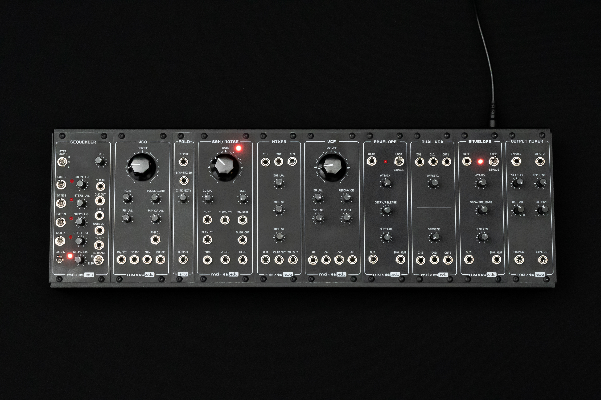

Building a Synthesizer, 1
The mki x es.EDU DIY System
- Introduction: The World of DIY Synthesizers
- 1: The mki x es.EDU DIY System
- 2: Building the Power Supply
- Glossary and Electrical Connections
This post will be a brief oveview of the mki x es.EDU DIY System. I’ll get to actual construction in the next post.
Including the power supply, there are 11 modules in the full system, but two of them are the same.
I personally think that the single greatest thing you get with the kits is something which doesn’t ship in the box: The instructions. They are generally excellent, and most of them were written by Mortiz Klein, who did most of the circuit design. If you’re seriously considering building these (or any other synth kits), I’d suggest sitting down with one of the manuals – here is the VCO manual, for example – as they will not only teach you about electronics and synthesizers but also about how to teach such concepts.
The full system includes:
- A combination enclosure and power supply.
- A VCO (Voltage Controlled Oscillator) which produces either a sawtooth wave or a pulse (a generalized square wave with variable width). This is one of two oscillators in the full system. An oscillator is a “thing which produces sound” which can be filtered and combined by other modules.
- Two envelope generators which produce, well, envelopes. Think of an envelope as (for example) the volume over time of a particular note. If you were making an organ sound, you would want the volume of a note to immediately drop to nothing when you took your finger off of a key. If you were making a xylophone sound, on the other hand, you would want the sound to slowly fade out. The envelope generator produces a voltage which corresponds to this desired change in volume. However, actually affecting the sound produced by an oscillator with this envelope will require another module, the VCA. The full system includes two identical EGs modules. Envelopes are also useful for controlling things besides volume, such as filters.
- A dual VCA (Voltage Controlled Amplifier). The primary use case for this module is taking as inputs the sound produced by the oscillator and the envelope produced by an envelope generator and producing as an output a sound which follows the envelope in volume and has a tone produced by the oscillator. There are other ways to use it, but this is the most common thing to do.
- A five-note sequencer which produces a 3, 4, or 5 note sequence, such as an arpeggio. What if your compositions require more than 5 notes? Well, you might need a different sequencer! This is just to learn how they work. But, as it’s a modular system, you can also do things like clock the sequencer at an audio rate and use it as a waveshaper.
- A VCF (Voltage Controlled Filter). This changes the sound of the oscillator like an equalizer does. This VCF is just a low-pass (removes higher frequencies). It also has resonance, which is a signal boost at the cutoff frequency, which gives the user of the filter more options for the sound they produce.
- A noise and sample and hold module. Noise is simple enough to explain; it’s just a different sort of oscillator which produces white noise or pink noise instead of a “cleaner” waveform such as a pulse. Sample and hold is much trickier to explain! In fact, I think I will defer discussion of how sample and hold works until I look at this module in depth in a future post, so that I don’t totally derail this post.
- The wavefolder is a module that takes, for example, a triangle wave and quite literally folds the wave over on itself, turning the peak of the triangle upside down and resulting in a jagged edge. In contrast to the rest of the modules, this is a feature which isn’t found on many synthesizers, although some modern synths will allow you to begin with an already-folded oscillator by playing back a sample.
- The mixer combines up to three input signals as a single output, and also has a distoration feature which can make (possibly) pleasing changes to your signal by clipping it. You don’t have to distort your sounds if you don’t want to, though.
- The output module is a different kind of mixer than the mixer above. It will take either one or two inputs and produce a stereo ouput by panning them right or left. It has a headphone amplifier and a line level output.
Although the instructions are very good, as I work through each kit I am finding that I often want additional information, such as more explanation of what certain components do or additional schematic diagrams. I will share that information in the post for each kit I build.
That’s the whole system! I will discuss each module in more detail when I write about building them in future posts. The next post in this series discusses building the power supply.
Resources
- Introducing the mki x es.edu DIY VCO kit by Moritz Klein (7:23). Although billed as an intro to the VCO kit, the latter half of the video is a demo of the full system, if you’d like to hear it bleep and bloop.
- Designing a simple 5-step sequencer from scratch by Moritz Klein (32:07) A nice example of the step-by-step, breadboard-based approach to understanding how the circuit works which is used throughout the entire Erica Synths EDU series.
